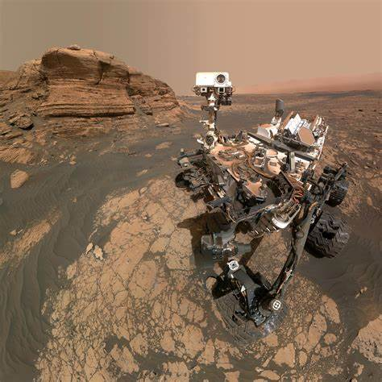

Curiosity Rover
Mission Goals
Curiosity’s main mission is to explore Mars' climate and geology, and determine if the planet could have ever supported microbial life.
Launch and Landing
Curiosity launched on November 26, 2011 and successfully landed on August 6, 2012 in Gale Crater using a sky crane system.
Major Discoveries
- Found organic molecules in ancient Martian rocks.
- Detected seasonal changes in methane levels in the atmosphere.
- Discovered evidence of ancient freshwater lakes.
Technical Highlights
- Nuclear-powered with a radioisotope generator.
- Equipped with 17 cameras, a robotic arm, and a laser (ChemCam).
- Weighs about 2,000 pounds (900 kg).